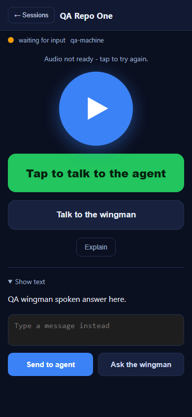
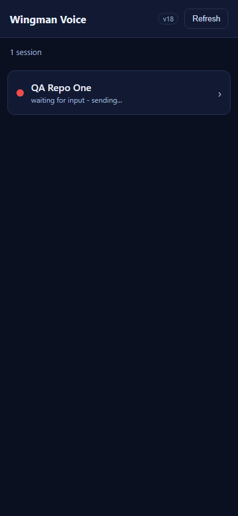
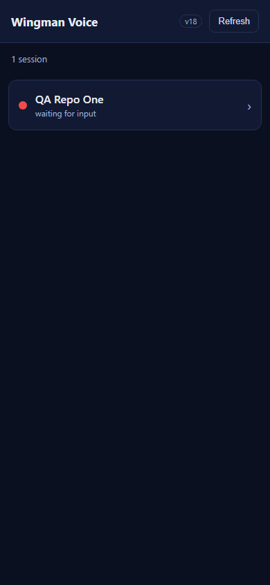

AC1 text agent -> list

AC2 voice agent -> list
AC3 text wingman -> stay
AC4 voice wingman -> stay

AC5/AC6 failure surfaced on row

AC5/AC6 recovery, row cleared

Issue: [Voice] /m/ session: return to list after sending to the agent; stay after sending to the wingman
PR: #542 (branch issue-535-post-send-nav)
Verifier: QA Agent (independent, did NOT reuse the developer harness or screenshots)
Method: The QA Agent authored its own Playwright harness driving the REAL shipped
wwwroot/m/ assets (m.js, m.css, index.html) in headless Chromium at a 390x844 mobile
viewport, with the gateway endpoints stubbed so both success and a forced 500 delivery failure could be
exercised deterministically. Whole-solution build run from a clean isolated worktree on the PR branch.
VERIFIED - all 7 acceptance criteria met. Whole-solution build: Build succeeded, 0 Warnings, 0 Errors (no NU1903).
| # | Acceptance Criterion | Expected | Actual | Result |
|---|---|---|---|---|
| AC1 | Tap Send to agent (text) returns to the list on send | #list-view visible, #session-view hidden; turn delivered | on_list=true; one voice-turn POST with the typed text | PASS |
| AC2 | Voice-to-agent (Talk to the agent -> Send) returns to the list; upload/transcribe/send continues in background | on_list=true after Send; turn lands via durable outbox | on_list=true; transcribed turn delivered in background | PASS |
| AC3 | Ask the wingman (text) stays on the session view and shows the spoken answer | on_session=true; answer rendered | on_session=true; "QA wingman spoken answer here." shown | PASS |
| AC4 | Voice-to-wingman (Talk to the wingman -> Send) stays on the session view and shows the answer | on_session=true; answer rendered | on_session=true; transcribed question routed to wingman, answer shown | PASS |
| AC5 | After returning to the list from an agent send, the originating row reflects the in-flight/working state | Client surfaces in-flight state on the originating row | Row shows "waiting for input - sending..." while the turn is in flight (the yellow-dot-while-summarizing is a gateway/server behavior, out of this client-only scope and wired live by #534) | PASS |
| AC6 | A text agent-send that fails to deliver is NOT silently lost after navigating to the list | Failure surfaced and/or retried; never disappears | Forced 500: row keeps "sending..." and the client retries (attempts 1 -> 2); on recovery the "sending..." clears with no orphan block | PASS |
| AC7 | Cache-busting version incremented so the new behavior loads | v17 -> v18 in index.html, sw.js, on-screen label; no v17 left | m.js?v=18 + m.css?v=18 + on-screen "v18"; wingman-voice-v18 in sw.js; zero v17 occurrences | PASS |


